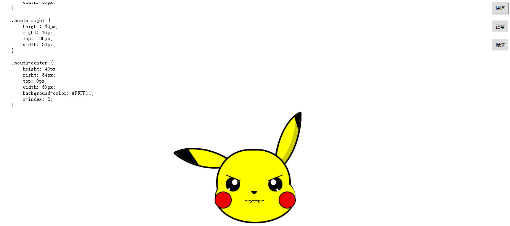

自我评价
- 1、熟悉 HTML5/CSS3 的新功能， 熟悉Es6语法， 能够快速搭建 移动端页面 及 动画的制作；
- 2、熟悉媒体查询，可以实现 响应式， 熟悉rem、vw， 能够高度还原UI设计稿与交互实现
- 3、熟练运用 LESS/SASS 开发兼容各大主流浏览器的Web页面；
- 4、熟悉javascript， 熟悉DOM编程， 熟悉jQuery、iScroll、swiper等框架;
- 5、熟悉Ajax/Json 能够配合后台实现应用模块的开发；
- 6、熟悉模块化编程， 理解MVC、MVVM等思想；
- 7、熟悉vue， 对生命周期，计算属性，vue指令，组件通信，状态管理有深入了解
项目展示
- 导航网站： 可用作浏览器主页导航。按下键盘上的每一个键对应一个网址 使用 js生成键盘界面、 appendChild对dom元素进行添加 ， 设计数据，二维数组存放所有的键、hash键值对的形式存放对应的网址、 使用localStorage 存储用户编辑的数据,防止刷新页面数据消失 使用JSON.parse转化json字符串为json对象， 封装工具函数， 使用css的box-shadow、border-radius等，进行样式制作
- 预览链接:https://yjj963.github.io/nav/
- 源码链接:https://github.com/yjj963/nav

- 生气的皮卡丘： 播放整个画皮卡丘的过程和代码，可调速，使用了事件委托绑定事件， 通过setTimeout来实现代码和皮卡丘的陆续显示， 使用substring来截取要显示的字符串， 使用scrollTop、scrollHeight来滚动代码， 主要是用css新属性(圆角边框，变换，阴影)组合来实现皮卡丘， 使用transform、transform-origin、实现各种变换， 使用transtion实现所有变换的过渡效果， @keyframes规则定义动画关键帧配合animation实现动画
- 预览链接：https://yjj963.github.io/pikachu-angry/
- 源码链接：https://github.com/yjj963/pikachu-angry
- 
- 仿cnode社区： 使用到vue.js计算属性、 vue.js的内置指令和事件的绑定、 vue.js的自定义事件和触发、 vue-router路由的跳转和监听、 父子组件之间的数据传递
- 预览链接：https://yjj963.github.io/cnode-vue/index.html
- 源码链接：https://github.com/yjj963/cnode-vue

-
重构有赞商城：
用vue-cli配合webpack搭建项目
实现了有赞商城的部分页面的tab切换， 弹出层和遮罩层的显示与关闭等
使用 easymock 生成的数据接口请求数据，处理数据，渲染页面，页面跳转
使用基于 Vue.js 的移动端组件库 mint-ui的Infinite scroll 组件实现触底加载
使用 swiper 实现banner轮播
使用vuex 实现个人地址的增删改查的状态管理
- 预览链接：https://yjj963.github.io/yz/
- 源码链接：https://github.com/yjj963/yz
工作经历
2017.10-2018.11
-
北京联泰集群
前端开发工程师
- 集群操作系统 用于高性能计算(HPC)，
- 页面制作中列表居多，使用css的float等实现多个页面的排版布局，
- 使用JavaScript，jquery实现页面交互效果， 如分页、进度条、弹出框、拖拽、tab切换。
- 使用ajax和后台工程师提供的数据接口完成有效对接。
- bug修复
教育经历
2013/09 - 2017/07
山西机电工程大学
计算机科学与技术 统招 本科